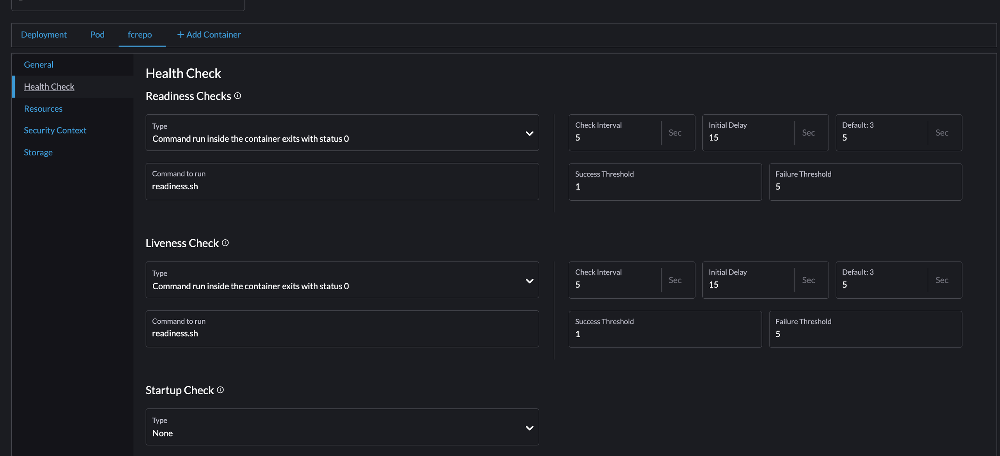

Reindexing Solr¶
About¶
Sometimes, Solr needs to be reindexed. Depending on the health of the server this could be after MAGPIE ingests something or when you need to reindex everything after changing ldpath. This document attempts to explain those processes.
Post Ingest¶
After MagPie runs, you may need to make Fedora index the documents in Solr.
Since we have moved to Rancher from Chef, Solr documents do not always get written automatically to fcrepo’s Solr instance. The same goes for the triple store. As a result, you must trigger it by shelling into fcrepo and posting an HTTP request against the Fedora Reindexing Service.
Running¶
Connect to the fedora pod or wherever fedora is running via shell. You can do this in Rancher or via
kubectl.
Once inside the container (pod), you can get useful information about the service via cURL:
curl http://localhost:9080/reindexing
To reindex, you need to make a POST to the defined re-indexing endpoint, and it will begin to traverse the Fedora repository at that point, sending “re-indexing” hints to the specified services (there are no default services defined). Currently, there is no way to target specific Fedora resources with this method.
curl -X POST http://localhost:9080/reindexing/ -H "Content-Type: application/json" -d '["broker:queue:solr.reindex","broker:queue:triplestore.reindex"]'
Note, running the command above should reindex Solr and Fuseki. You can remove the Fuseki command if unneeded.
curl -X POST http://localhost:9080/reindexing/ -H "Content-Type: application/json" -d '["broker:queue:solr.reindex"]'
Redeploying and Removing Health Check¶
Before you do this, you may need to remove the healthcheck and redeploy pods.
The settings for the healthcheck should look something like this:
You can access this page from Workloads -> Pod Name (fedora) -> Config -> Health Check
Monitoring¶
After running the reindex, you can then watch the logs to make sure every thing is running well like so:
# karaf log:
tail -f /usr/local/karaf/data/log/karaf.log
ls -al /usr/local/karaf/data/log/
If nothing happens, you need to redploy or remove the health check. I recommend first trying a redeploy of
fedora and fedora-solr. If that doesn’t work, remove the health check.
It is still unclear exactly what needs to happen for this to work. We have also seen where adding the liveliness check back seems to make things start working again.
Troubleshooting¶
Here are the karaf.log` contents for an item as it’s being indexed:
tomcat@fedora-596dfc5957-55c7j:/usr/local/karaf/data/log$ grep -nri "https://api-pre.library.tamu.edu/fcrepo/rest/bb/97/f2/3e/bb97f23e-803a-4bd6-8406-06802623554c/cherokee-cant-reindex_objects/28" .
./karaf.log.1:12989:2025-07-01T18:15:15,660 | INFO | qtp761343288-110 | LDCacheBackend | 160 - org.fcrepo.camel.fcrepo-ldpath - 4.7.2 | retrieving resource https://api-pre.library.tamu.edu/fcrepo/rest/bb/97/f2/3e/bb97f23e-803a-4bd6-8406-06802623554c/cherokee-cant-reindex_objects/28
./karaf.log.1:12990:2025-07-01T18:15:15,672 | INFO | qtp761343288-110 | AbstractHttpProvider | 166 - wrap_file__usr_local_tomcat_.m2_repository_org_apache_marmotta_ldclient-core_3.3.0_ldclient-core-3.3.0.jar - 0.0.0 | retrieving resource data for https://api-pre.library.tamu.edu/fcrepo/rest/bb/97/f2/3e/bb97f23e-803a-4bd6-8406-06802623554c/cherokee-cant-reindex_objects/28 from 'Linked Data' endpoint, request URI is <https://api-pre.library.tamu.edu/fcrepo/rest/bb/97/f2/3e/bb97f23e-803a-4bd6-8406-06802623554c/cherokee-cant-reindex_objects/28>
./karaf.log.1:12991:2025-07-01T18:15:16,221 | INFO | qtp761343288-110 | AbstractHttpProvider | 166 - wrap_file__usr_local_tomcat_.m2_repository_org_apache_marmotta_ldclient-core_3.3.0_ldclient-core-3.3.0.jar - 0.0.0 | retrieved 58 triples for resource https://api-pre.library.tamu.edu/fcrepo/rest/bb/97/f2/3e/bb97f23e-803a-4bd6-8406-06802623554c/cherokee-cant-reindex_objects/28; expiry date: Wed Jul 02 18:15:16 UTC 2025
./karaf.log.1:12992:2025-07-01T18:15:16,221 | INFO | qtp761343288-110 | LDCache | 165 - wrap_file__usr_local_tomcat_.m2_repository_org_apache_marmotta_ldcache-core_3.3.0_ldcache-core-3.3.0.jar - 0.0.0 | refreshed resource https://api-pre.library.tamu.edu/fcrepo/rest/bb/97/f2/3e/bb97f23e-803a-4bd6-8406-06802623554c/cherokee-cant-reindex_objects/28
./karaf.log.1:13455:2025-07-01T18:15:58,742 | INFO | qtp761343288-110 | LDCacheBackend | 160 - org.fcrepo.camel.fcrepo-ldpath - 4.7.2 | retrieving resource https://api-pre.library.tamu.edu/fcrepo/rest/bb/97/f2/3e/bb97f23e-803a-4bd6-8406-06802623554c/cherokee-cant-reindex_objects/28
./karaf.log.1:13631:2025-07-01T18:15:58,930 | INFO | qtp761343288-110 | LDCacheBackend | 160 - org.fcrepo.camel.fcrepo-ldpath - 4.7.2 | retrieving resource https://api-pre.library.tamu.edu/fcrepo/rest/bb/97/f2/3e/bb97f23e-803a-4bd6-8406-06802623554c/cherokee-cant-reindex_objects/28
./karaf.log.4:44792:2025-07-01T19:02:39,336 | INFO | qtp761343288-110 | LDCacheBackend | 160 - org.fcrepo.camel.fcrepo-ldpath - 4.7.2 | retrieving resource https://api-pre.library.tamu.edu/fcrepo/rest/bb/97/f2/3e/bb97f23e-803a-4bd6-8406-06802623554c/cherokee-cant-reindex_objects/28
./karaf.log.4:45021:2025-07-01T19:02:39,741 | INFO | qtp761343288-110 | LDCacheBackend | 160 - org.fcrepo.camel.fcrepo-ldpath - 4.7.2 | retrieving resource https://api-pre.library.tamu.edu/fcrepo/rest/bb/97/f2/3e/bb97f23e-803a-4bd6-8406-06802623554c/cherokee-cant-reindex_objects/28
./karaf.log.4:45197:2025-07-01T19:02:39,894 | INFO | qtp761343288-110 | LDCacheBackend | 160 - org.fcrepo.camel.fcrepo-ldpath - 4.7.2 | retrieving resource https://api-pre.library.tamu.edu/fcrepo/rest/bb/97/f2/3e/bb97f23e-803a-4bd6-8406-06802623554c/cherokee-cant-reindex_objects/28
Automatically Rekicking Solr¶
Often times, this process above is very prone to failure. Assuming you have set up a kubectl connection to the cluster, you can automate restarting this service like so:
import subprocess
import time
import threading
import logging
import sys
from time import sleep
# set a default time to wait on the log
timeout_seconds = 30
# set cluster name based on your local context
cluser_name = "pre-cluster"
# Configure logging
logging.basicConfig(
level=logging.INFO,
format="%(asctime)s [%(levelname)s] %(message)s",
handlers=[
logging.FileHandler("fedora_monitor.log"),
logging.StreamHandler(sys.stdout)
]
)
logger = logging.getLogger(__name__)
# message to make sure your kube context is for the cluster above (if you have several configured)
switch_context = [
"kubectl",
"config",
"use-context",
cluser_name
]
# The message we will use to restart the pod (check pod name and namespace)
redeploy = [
"kubectl", "rollout", "restart", "deployment/fedora", "-n", "fcrepo4"
]
# A Function to Find the Name of Our Current Pod (It changes on redeploy)
def get_pod_name():
cmd = (
"kubectl get pods -n fcrepo4 --no-headers "
'-o custom-columns=":metadata.name" | grep "^fedora-" | head -n 1'
)
result = subprocess.run(cmd, shell=True, capture_output=True, text=True, check=True)
return result.stdout.strip()
# Function to monitor log
def stream_with_timeout(proc, timeout):
last_line_time = time.time()
def watchdog():
while proc.poll() is None:
if time.time() - last_line_time > timeout:
logger.warning(f"No new log lines in {timeout} seconds. Terminating.")
print(f"\nNo new log lines in {timeout} seconds. Terminating.")
proc.terminate()
break
time.sleep(1)
watcher = threading.Thread(target=watchdog, daemon=True)
watcher.start()
for line in proc.stdout:
last_line_time = time.time()
logger.info(line.strip())
if __name__ == "__main__":
# On start, switch to your cluster
result = subprocess.run(switch_context, check=True, capture_output=True, text=True)
# Log the Cluster you have connected with
logger.info(result.stdout.strip())
while True:
# Assume things are stopped and redeploy
subprocess.run(redeploy, check=True, capture_output=False, text=True)
logger.info("Redeploying")
# Wait for Pod to spin before you try to get its name
sleep(10)
# Find the name of the pod
pod_name = get_pod_name()
logger.info(f"Target pod: {pod_name}")
TAIL_CMD = "tail --follow=name --retry /usr/local/karaf/data/log/karaf.log 2>/dev/null"
monitor = [
"kubectl", "exec", "-i", pod_name, "-n", "fcrepo4", "--",
"sh", "-c", TAIL_CMD
]
# Monitor the log and if it rotates keep watching. If it really stops, start back at top and restart pod.
with subprocess.Popen(monitor, stdout=subprocess.PIPE, stderr=subprocess.STDOUT, bufsize=1, text=True) as proc:
try:
stream_with_timeout(proc, timeout_seconds)
except KeyboardInterrupt:
logger.info("Interrupted by user")
proc.terminate()
Refreshed Resource¶
2025-07-02T00:01:02,445 | INFO | qtp544841243-111 | LDCache | 165 - wrap_file__usr_local_tomcat_.m2_repository_org_apache_marmotta_ldcache-core_3.3.0_ldcache-core-3.3.0.jar - 0.0.0 | refreshed resource https://api-pre.library.tamu.edu/fcrepo/rest/bb/97/f2/3e/bb97f23e-803a-4bd6-8406-06802623554c/cherokee-cant-reindex_objects/88/pages